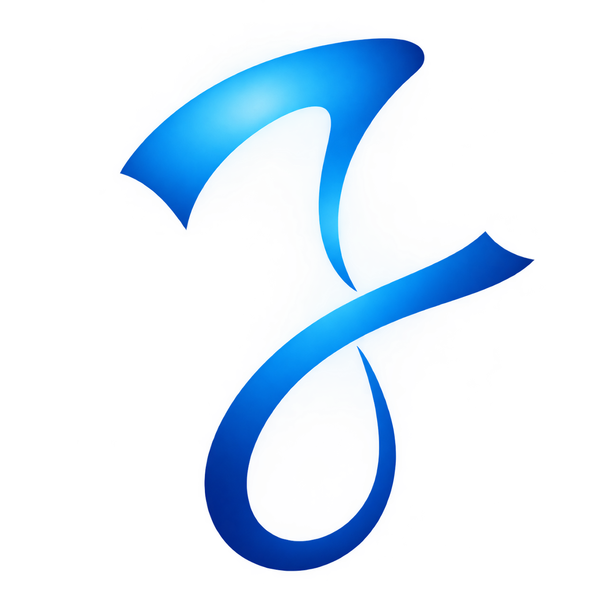

SR
S. Riaz
Senior Technical Advisor, Academic Labs"Atif demonstrates exceptional adaptation parameters. His core command over layout widget hierarchies allowed him to design multiple complex interfaces ahead of schedule."
Motion Designer and UI/UX Designer with a background in Software Engineering (DAE/ADSE). Skilled in After Effects animation, Adobe Illustrator, visual asset design, and YouTube SEO with expertise in channel growth, keyword research & content optimization.

Breakdown of my visual designs, motion graphics & UI/UX development skills.
The industry-standard softwares, cutting-edge AI engines & code editors I use to craft seamless experiences.
From branding & designing to high-retention video production with web model, complete workflow.
The core milestones & technical objectives focused on maximizing production speed, automating workflows & expanding my digital footprint
"Atif demonstrates exceptional adaptation parameters. His core command over layout widget hierarchies allowed him to design multiple complex interfaces ahead of schedule."
"His project repository architectures showcase a profound understanding of component structure and media optimization. He tracks guidelines like a seasoned builder."
No. While syntax, debugging, and scripts are quickly completed by models, human engineers remain essential for broad data structures, deep logic checking, and overall architecture planning.
Yes! Utility-first classes layout building ko fast aur smooth bana deti hain, jisse interactive UI jaldi develop ho jata hai.